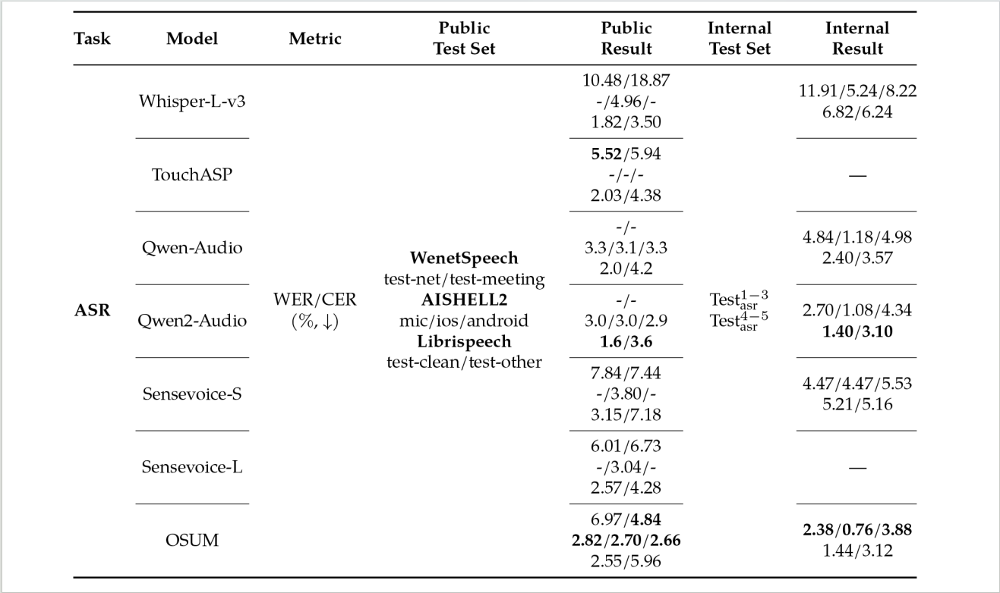
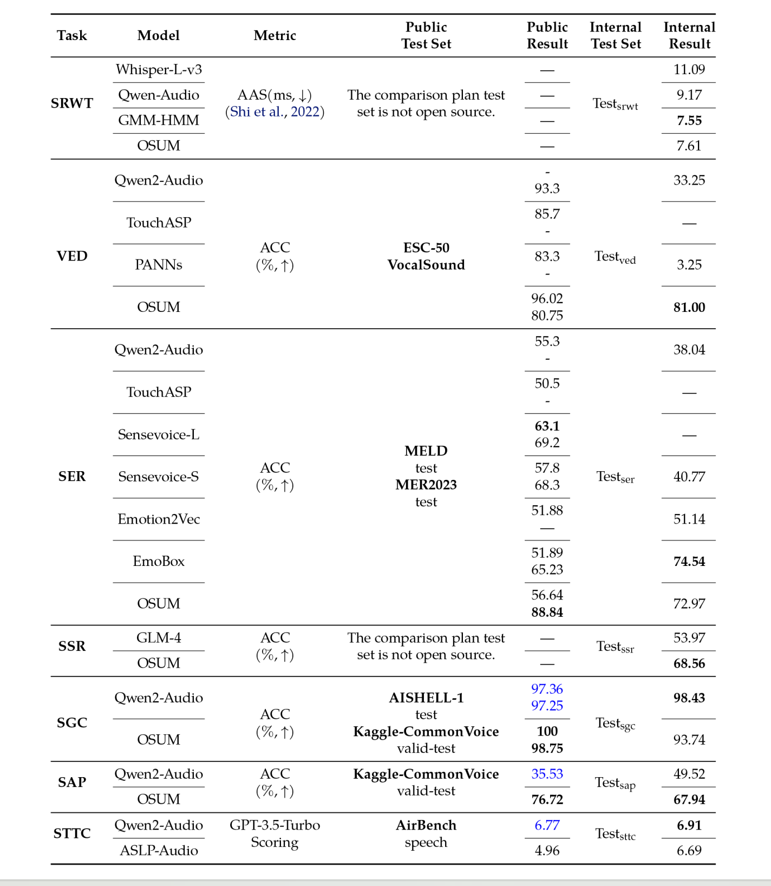

<!DOCTYPE html>
<!-- saved from url=(0033)https://QicongXie.github.io/end2endvc/ -->
<html lang="en-US">

<head>
  <meta http-equiv="Content-Type" content="text/html; charset=UTF-8">


  <!-- Begin Jekyll SEO tag v2.7.1 -->
  <title>OSUM: Advancing Open Speech Understanding Models with Limited Resources in Academia</title>
  <meta name="generator" content="Jekyll v3.9.0">
  <meta property="og:title" content="title">
  <meta property="og:locale" content="en_US">
  <meta name="twitter:card" content="summary">
  <!-- End Jekyll SEO tag -->

  <meta name="viewport" content="width=device-width, initial-scale=1">
  <meta name="theme-color" content="#157878">
  <link rel="stylesheet" href="style.css">
  <style>
        .method {
            display: inline-block;
/*             width: 120px; /* Adjust the width as needed */ */
            font-weight: bold;
        }


        .explanation {
            display: inline-block;
/*             margin-left: 20px; /* Adjust the margin as needed */ */
        }


        .video-title {
            text-align: center;
            font-weight: bold;
            margin-top: 10px;
        }
    </style>
</head>

<body data-new-gr-c-s-check-loaded="14.1001.0" data-gr-ext-installed="">
  <section class="page-header">
    <!-- <h1 class="project-name">Demo PAGE</h1> -->
    <!-- <h2 class="project-tagline"></h2> -->


  </section>

  <section class="main-content">
    <h1 id="">
      <center>OSUM: Advancing Open Speech Understanding Models with Limited Resources in Academia</center>
    </h1>

    <h3 id="">
  
      <center>Audio, Speech and Language Processing Group (ASLP@NPU), School of Computer Science, Northwestern Polytechnical University </center>
    </h3>

  <tr>
        <center></center>
  </tr>


    <br><br>
    <h2 id="abstract">1. Abstract<a name="abstract"></a></h2>
    <p>Large Language Models (LLMs) have made significant progress in various downstream
tasks, inspiring the development of Speech Understanding Language Models (SULMs) to
enable comprehensive speech-based interactions. However, most advanced SULMs are developed by the industry, leveraging large-scale datasets and computational resources that
are not readily available to the academic community. Moreover, the lack of transparency
in training details creates additional barriers to further innovation. In this study, we
present OSUM, an Open Speech Understanding Model designed to explore the potential
of training SLUMs under constrained academic resources. The OSUM model combines
a Whisper encoder with a Qwen2 LLM and supports a wide range of speech tasks, including speech recognition (ASR), speech recognition with timestamps (SRWT), vocal
event detection (VED), speech emotion recognition (SER), speaking style recognition
(SSR), speaker gender classification (SGC), speaker age prediction (SAP), and speechto-text chat (STTC). By employing an ASR+X training strategy, OSUM achieves efficient
and stable multi-task training by simultaneously optimizing ASR alongside target tasks.
Beyond delivering strong performance, OSUM emphasizes transparency by providing
openly available data preparation and training methodologies, offering valuable insights
and practical guidance for the academic community. By doing so, we aim to accelerate
research and innovation in advanced SULM technologies.</p>
    <br><br>
    <table border=0 frame=void rules=none>
    
      <tr>
 
<!--         <center></center> -->
            <center></center>
<!--         <embed src="raw/fig/system.pdf" type="application/pdf" width="100%" height="600px" /> -->
       <center><span><b>Figure 1: The overview of the architecture and tasks of OSUM.</b></span> </center>

 
      </tr>

    </table>
    <br><br>


    <h2>2. Demos <a name="Comparison"></a></h2>
           <div class="demo">
<!--             <h2>OSUM Demo</h2>   -->
            <p>Check out the demo videos showcasing OSUM's capabilities.</p>
            <div class="video-container" style="display: flex; flex-direction: column; align-items: center; gap: 50px;">
                <div style="display: flex;  align-items: center; height: auto; flex-direction: column;">
                  <div class="video-title">ASR - Automatic Speech Recognition</div>
                  <br><br>
                    <video controls width="960" height="540" style="border: 3px solid #000;">
                        <source src="raw/samples/ASR_Concat.mp4" type="video/mp4">
                        Your browser does not support the video tag.
                    </video>
                    
                </div>

                <!-- SRWT Demo -->
                <div style="display: flex;  align-items: center; height: auto; flex-direction: column;">
                  <div class="video-title">SRWT - Speech Recognition With Timestamps </div>
                    <video controls width="960" height="540" style="border: 3px solid #000;">
                        <source src="raw/samples/SRWT_Concat.mp4" type="video/mp4">
                        Your browser does not support the video tag.
                    </video>
                    
                </div>

                <!-- VED Demo -->
                <div style="display: flex;  align-items: center; height: auto; flex-direction: column;">
                  <div class="video-title">VED - Vocal Event Detection</div>
                  <br><br>
                    <video controls width="960" height="540" style="border: 3px solid #000;">
                        <source src="raw/samples/VED_Concat.mp4" type="video/mp4">
                        Your browser does not support the video tag.
                    </video>
                    
                </div>

                <!-- SER Demo -->
                <div style="display: flex;  align-items: center; height: auto; flex-direction: column;">
                  <div class="video-title">SER - Speech Emotion Recognition</div>
                  <br><br>
                    <video controls width="960" height="540" style="border: 3px solid #000;">
                        <source src="raw/samples/SER_Concat.mp4" type="video/mp4">
                        Your browser does not support the video tag.
                    </video>
                    
                </div>

                <!-- SSR Demo -->
                <div style="display: flex;  align-items: center; height: auto; flex-direction: column;">
                   <div class="video-title">SSR - Speaking Style Recognition</div>
                  <br><br>
                    <video controls width="960" height="540" style="border: 3px solid #000;">
                        <source src="raw/samples/SSR_Concat.mp4" type="video/mp4">
                        Your browser does not support the video tag.
                    </video>
                   
                </div>

                <!-- SGC Demo -->
                <div style="display: flex;  align-items: center; height: auto; flex-direction: column;">
                  <div class="video-title">SGC - Speaker Gender Classification</div>
                  <br><br>
                    <video controls width="960" height="540" style="border: 3px solid #000;"> 
                        <source src="raw/samples/SGC_Concat.mp4" type="video/mp4">
                        Your browser does not support the video tag.
                    </video>
                    
                </div>

                <!-- SAP Demo -->
                <div style="display: flex;  align-items: center; height: auto; flex-direction: column;">
                  <div class="video-title">SAP - Speaker Age Prediction</div>
                  <br><br>
                    <video controls width="960" height="540"" style="border: 3px solid #000;">
                        <source src="raw/samples/SAP_Concat.mp4" type="video/mp4">
                        Your browser does not support the video tag.
                    </video>
                    
                </div>

                <!-- STTC Demo -->
                <div style="display: flex;  align-items: center; height: auto; flex-direction: column;">
                  <div class="video-title">STTC - Speech to Text Chat</div>
                  <br><br>
                    <video controls width="960" height="540" style="border: 3px solid #000;">
                        <source src="raw/samples/STTC_Concat.mp4" type="video/mp4">
                        Your browser does not support the video tag.
                    </video>
                    
                </div>
        </div>
    
 <div class="performance">
            <h2>3.Performance</h2>
            <p>Details about the performance benchmarks and capabilities of OSUM.</p>
            <tr>
<!--           <center></center> -->
              <center></center>
<!--               <embed src="raw/fig/radar.pdf" type="application/pdf" width="100%" height="600px" /> -->
         <center><span><b>Figure 2:  Comparison of Qwen2-Audio and our OSUM model. In most tasks, OSUM achieves a better performance than Qwen2-Audio despite using significantly fewer computational resources and training data.</b></span> </center>
        </tr>
   
         <tr>
<!--           <center></center> -->
           <center></center> 
<!--            <embed src="raw/fig/res_asr.pdf" type="application/pdf" width="100%" height="600px" /> -->
         <center><span><b>Table 1:  Evaluation results of ASR tasks on public and internal test sets. The bold font represents the best result among the same test set. All internal results are inferred by ourselves.</b></span> </center>
        </tr>
          <tr>
<!--           <center></center> -->
              <center>  
<!--             <embed src="raw/fig/res_multi.pdf" type="application/pdf" width="100%" height="600px" /> -->
         <center><span><b>Table 2: Evaluation results of multi-tasking on public and internal test sets. The best results for each test set are highlighted in bold font. Results shown in blue font, as well as those on internal test sets, are inferred using the original released model by ourselves.</b></span> </center>
        </tr>
</div>

  <tr>
        <center></center>
  </tr>

</html>


